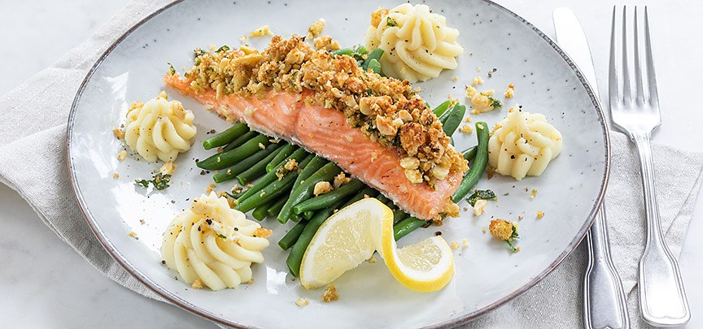

De Lekkerste Gerechten
Tegenwoordig wordt zelf koken steeds belangrijker. De meeste mensen werken veel thuis en hebben zodoende meer tijd om zelf een volwaardige maaltijd op tafel te zetten. Op deze site staan gerechten voor beginners, gevorderden en voor echte profs.
Het leuke aan deze site is dat u uw eigen recept kan uploaden onder het kopje Invoer recepten. Ook kunt u de recepten van andere koks downloaden zodat u alles kunt uitproberen.